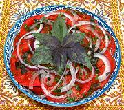

|
Tomato Herb SaladUzbek | ||||
| Makes: Effort: Sched: DoAhead: |
4 salad ** 20 min Short |
This simple salad is popular in Uzbekistan in summer when the tomatoes are ripe. The three herbs give it a unique flavor, and the chili gives it just a touch of essential sharpness. The lack of dressing will not be noticed. | |||
|
|
1-1/4 3-1/2 ------- 1 1 1 ------- 1/8 1/3 1/2 ------- |
# oz --- T T T --- t T t --- |
Tomatoes, ripe (1) Onion (2) -- Herb Mix Basil, Purple Dill Leaves Cilantro Leaves -- Spices mix Chili Flake (3) Salt Sugar ---------- |
Make - (20 min)
|
ngv_tomsal1 181113 sam25 -
www.clovegarden.com
©Andrew Grygus -
agryg@aaxnet.com - Linking to and non-commercial use of this page is
permitted.